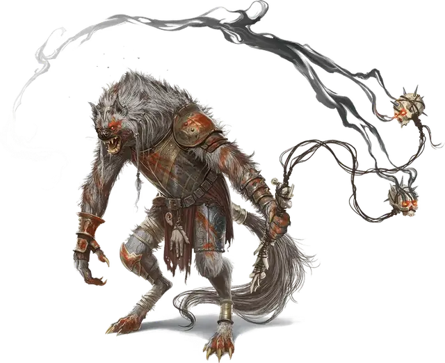

Флинд
Flind
Среднее Исчадие (Гнолл), обычно хаотично-злое

Класс Доспеха 16 (кираса)
Хиты 127 (15к8 + 60)
Скорость 30 футов
| мод | спас | ||
|---|---|---|---|
| СИЛ | 20 | +5 | +5 |
| ЛОВ | 14 | +2 | +2 |
| ТЕЛ | 19 | +4 | +8 |
| мод | спас | ||
|---|---|---|---|
| ИНТ | 11 | +0 | +0 |
| МДР | 13 | +1 | +5 |
| ХАР | 12 | +1 | +1 |
Навыки Восприятие +5, Запугивание +5
Чувства тёмное зрение 60 футов, пассивное Восприятие 15
Языки Бездны, Гноллий
Опасность 9 (5000 опыта)
Бонус мастерства +4
Среда обитания Лес, Луг, Побережье, Холмы
Особенности
Аура жажды крови. . Если флинд дееспособен, то любое существо с особенностью Буйство может совершить атаку укусом бонусным действием, если находится не далее 10 футов от флинда.
Действия
Мультиатака. Флинд совершает одну атаку Цепом хаоса, одну атаку Цепом боли и одну атаку Цепом паралича или три атаки Длинным луком.
Цеп хаоса. . Рукопашная атака оружием: +9 к попаданию, досягаемость 5 футов, одна цель. Попадание: 10 (1к10+5) дробящего урона и цель должна совершить спасбросок Мудрости Сл 16. При провале цель использовать должна использовать свою реакцию, что бы совершить рукопашную атаку по случайной цели (кроме флинда) в пределах досягаемости. Если в зоне досягаемости нет целей, то существо перемещается на половину своей скорости в случайном направлении.
Цеп боли. . Рукопашная атака оружием: +9 к попаданию, досягаемость 5 футов, одна цель. Попадание: 10 (1к10+5) дробящего урона плюс 16 (3к10) урона психической энергией.
Цеп паралича. . Рукопашная атака оружием: +9 к попаданию, досягаемость 5 футов, одна цель. Попадание: 10 (1к10 + 5) дробящего урона, и цель должна преуспеть в спасброске Телосложения Сл 16 или стать парализованной до конца своего следующего хода.
Длинный лук. . Дальнобойная атака оружием: +4 к попаданию, дистанция 150/600 футов, одна цель. Попадание: 4 (1к8) колющего урона.
Описание
Когда повелитель демонов Йеногу хочет создать особенно грозного лидера банды, он превращает исключительно сильного и злобного гнолла в демонического воина, известного как флинд.
В банде может быть только один флинд и он определяет путь банды. Благодаря своей особой связи с Йеногу, флинд использует божественные предзнаменования и демоническое провидение для того чтобы направить гноллов к слабой добыче и учинить резню.
В отличие от других гуманоидных лидеров, которые могут бездельничать за спинами своих приспешников, флинд возглавляет атаку. Его цеп причиняет ужасную боль, парализует и дезориентирует противника.